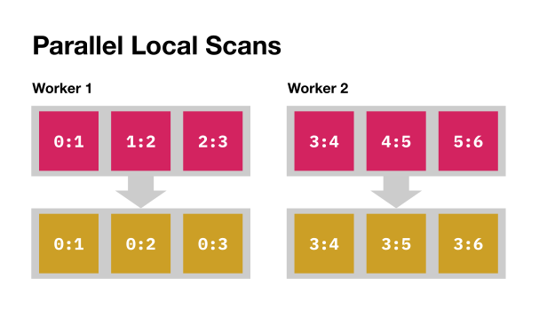

Lab 7: Run-Length Compression
Prologue: Logistics
Due Dates
For this lab, you’ll be turning in the following deliverables:
-
Checkpoint: Due Monday, October 28, 11:59pm (Gradescope)
-
Final Submission: Due Friday, November 1, 11:59pm
See the “Deliverables” section at the end of this document for more information on what you’ll be turning in.
Starter Code
You can get the starter code for this lab by cloning the lab repository:
Update October 28: The starter code has been updated since its initial release, and now includes the files
rle_compress.cuandrle_decompress.cu. If you cloned the repo before this update, please pull the latest commit, or manually copy the new files to your computer:
Introduction
Goals for This Lab
So far in this course, we’ve only looked at workloads with so-called “regular” data access patterns, in which data dependencies were predictable and consistent across different parts of the computation:
-
In Mandelbrot (Lab 1, 2), each pixel lived at a fixed position in the image, which was known before we started computing that pixel’s value.
-
In our wave simulation (Lab 3), every grid cell lived at a fixed position in the
uarray, and updating each cell only required looking at its immediate neighbors in a fixed pattern. -
In matrix multiply (Lab 4, 5, 6), every element of the C matrix depended only on a fixed set of indices in the A and B matrices, and there was a fixed pattern determining which elements of A were to be multiplied with which elements of B.
In this lab, we’ll start looking at how GPUs can be used to carry out computations requiring irregular memory access patterns, where the locations accessed by different parts of the computation depend on details of the input data which can only be determined dynamically.
Ultimately, our goal in this lab will be to develop a fast GPU implementation of run-length compression. As we’ll see, the memory access patterns required to carry out run-length compression are interestingly irregular, because the length of each run cannot be known before looking at the data. To help us write our run-length compression algorithm, we’ll be implementing a useful generic algorithm known as a “scan” (also called “prefix sum” or “cumulative sum”).
This lab is split into two main parts, and a third optional part:
-
In Part 1, we’ll implement a scan algorithm for the GPU. The scan algorithm itself is regular; however, as we’ll see, scan provides a very useful building block for implementing other, irregular algorithms.
-
In Part 2, we’ll implement run-length compression on the GPU. To do this, we’ll make use of the scan we developed in Part 1.
-
Part 3 is optional, and invites you to try implementing a fast decompression algorithm for the run-length encoding scheme from Part 2. This part will be worth extra credit, and we encourage you to try it if you have time!
Part 1: Associative Scan
Introduction
For the first part of this lab, we’ll be implementing an “associative scan” on the GPU. An associative scan can be described by the following sequential pseudocode:
=
=
=
where combine is some associative (but not necessarily commutative) function of two arguments, and identity is the identity element with respect to that operation.1 The elements of x can be of any data type, as long as they’re compatible with the combine operation. In practice, it’s common for combine to be +, and for identity to be 0, but other operations can be useful as well. For example, combine may be max, in which case identity would be -∞.
We can depict a scan diagrammatically as follows:
Throughout this lab, we’ll adopt a notation in which “i : j” stands for the combination of all elements with indices between between i (inclusive) and j (exclusive). We’ll call such a combination of elements a “partial reduction.” Using this notation, we can think of each input element in x as a partial reduction of a range containing just one element; i.e., the element x[i] can be written as the partial reduction i:i+1. In this notation, the goal of the associative scan is just to fill each element i of the output array with the partial reduction from 0 to i+1:
= 0:+1
The main thing we can do with partial reductions is combine them. Given partial reductions i:j and j:k, we can compute i:k = combine(i:j, j:k). Note that in order to (usefully) combine two partial reductions i:j and j:k, they need to share a common endpoint j. If you try to combine partial reductions i:j and l:k with j != l, then the resulting value won’t correspond to any contiguous subsequence of the input array, and won’t be very useful for the associative scan. (In the general case where combine is not commutative, there’s no way to “fill in the hole” in such a non-contiguous partial reduction after you’ve computed it.)
Understanding the Starter Code
You can find the starter code for Part 1 in the file scan.cu. In this file, we’ll be writing our associative scan as a C++ template to allow plugging in multiple different operations in place of combine without needing to rewrite our code. In the starter code, we give an example of a naive sequential scan on the CPU expressed as such a C++ template:
void
Here Op is a type parameter representing the operation we’ll be using for the scan. The Op type is guaranteed to expose the following API:
;
You may assume that the functions combine and identity can be safely and efficiently called from both the CPU and GPU.
Note that due to a regrettable quirk of C++ syntax, you can’t refer to the Op::Data type directly as “Op::Data”. Instead, you need to either write it as “typename Op::Data” as in:
typename Op::Data accumulator = /* ... */;
or else bind it to a shorter name with the using keyword:
using Data = typename Op::Data;
In the CPU scan example, we’re forced to use the typename syntax in the argument list of the function, but we’re able to use the “using” trick in the body. Similar considerations will probably apply in your own code.
In the test harness included with the starter code, your GPU scan implementation will be tested with two different operations:
-
SumOp, whereDataisuint32_t, andcombineis addition. -
DebugRangeConcatOp, whereDatais a pair of integers representing a partial reduction range, andcombineconcatenates partial reduction ranges sharing a common endpoint (i.e.,combine(i:j, j:k) = i:k).
The purpose of DebugRangeConcatOp is to make debugging your code easier, by directly tracking which range of indices each partial reduction value comes from. Because DebugRangeConcatOp is only for debugging, the starter code will only benchmark the performance of your kernel using SumOp, not DebugRangeConcatOp.
As a final note, one feature of the starter code which you may find useful is the function print_array, which you can use to print the contents of an array of Op::Data values like this:
print_array<Op>;
The array_ptr argument may point to a buffer on either the CPU or the GPU.
Implementation
The goal of Part 1 of this lab will be to write a fast associative scan implementation for the GPU:
Deliverable: In the file
scan.cu, implement the functionlaunch_scan, and any associated kernels, to perform an associative scan on the GPU. Aim to hit a throughput of134 GB/sor better, which is 30% of the theoretical peak bandwidth of our RTX A4000 GPU (448 GB/s).
The “throughput” reported by the benchmark harness is based on the theoretical minimum amount of data movement required to implement the scan (one read and one write for each element), divided by the time taken to execute the scan:
throughput = 2 * n * sizeof(Op::Data) / time
We’ll only evaluate the performance of your scan implementation on an array of size (roughly 67 million).
You won’t need to use any unfamiliar features of CUDA to implement this scan – it’s possible to write a fast implementation entirely using features we’ve already seen in this course. That said, we have some high-level suggestions to offer which you may find helpful.
Suggestions
There are a few fundamental patterns for producing and manipulating partial reduction values which you may find it helpful to keep in mind as you design your kernel.
One such pattern is to perform a collection of local scans in parallel, each computing a scan over a segment of the input sequence:

After you’ve computed a collection of local scans, you can collect the partial reduction values from the endpoints of multiple local segments, and perform a scan over those endpoint values to compute reductions over larger intervals of the sequence. This gives rise to a hierarchical scan:
Finally, given the results of a local scan over a segment, and a partial reduction value over preceding indices in the sequence, you can “fix up” the values in the local scan segment by combining them with the preceding partial reduction value:
How you use these patterns in your implementation – and, in fact, whether you use them at all – is up to you. Potentially, you can chain multiple instances of each pattern together across multiple levels of hierarchy. Some final questions you may want to consider include:
-
How should you map your computation to the memory hierarchy of the GPU? Is there any way you can take advantage of L1 cache or shared memory?
-
How should you map your computation to the compute hierarchy of the GPU? What should each CUDA thread be responsible for? How about each block?
-
How many kernel launches should you use? Is there a way you can chain multiple kernels together to build your solution?
-
Do you need any extra scratch buffers in global memory to implement your solution? (If so, you should define the function
get_workspace_sizein the starter code!)
CUDA Quirk: Dynamic Shared Memory in Templates
If you use dynamic shared memory in your solution, you may run into an arcane CUDA issue which we (the course staff) only became aware of while designing this assignment.
If you try to define a templated CUDA kernel which uses a dynamic shared memory allocation whose type depends on a template parameter, you’ll get compile errors if you try to instantiate the template multiple times with different types:
__global__ void
int
(You can view this example on Compiler Explorer: link)
As discussed in this Stack Overflow answer, you can fix this by declaring the extern shared memory allocation as an aligned char pointer, and then casting it to your desired shared memory type in a separate step:
__global__ void
(View on Compiler Explorer: link)
Questions
After you’ve written your GPU scan implementation, you can answer the following question:
Question 1 for final write-up: What throughput were you able to achieve with your scan implementation? How did you go about designing your algorithm, and what design did you ultimately end up adopting? Can you describe your implementation in terms of the patterns suggested in the lab instructions? (Or did you do something different?) Did you encounter any interesting bugs along the way? Finally, optionally: can you think of any ways it might be possible to develop an even faster scan implementation?
Part 2: Compression
Now that we’ve implemented our scan algorithm, we’re ready to put it to work!
Our goal in this section will be to implement run-length compression on the GPU. The workload we’re trying to implement can be described by the following sequential Python code:
# 'raw' is a byte array
=
=
= 0
=
= 1
+= 1
+= 1
+= 1
return ,
Given an arbitrary sequence of bytes, we want to find every contiguous run of repeated byte values, and pack the byte value and length of each run into the two arrays compressed_data and compressed_lengths, respectively. For certain kinds of files, such as images containing large blocks of solid color, this simple compression scheme can significantly reduce memory and storage requirements. Below, we show an example of run-length compression applied to a small byte array:
Implementation
This run-length compression workload is more irregular than anything else we’ve looked at so far in this course, because the dependency relationships between memory locations in the input and output buffers aren’t predictable ahead of time. To know where in the output arrays you should write information about a given run, you need to know how many runs came before it. Nevertheless, it is possible to parallelize this algorithm on the GPU!
Deliverable: In the file
rle_compress.cu, fill in the functionlaunch_rle_compress, and any associated kernels, to implement run-length compression on the GPU. Aim to process the main benchmark in1.5 msor less.
You can find the raw file we’ll be trying to compress here: link. (You may notice it looks familiar!) The file is approximately 16 million bytes long, and contains some regions with many tightly-packed short runs, as well as other regions with just a few long runs.
{kind=link}
Suggestion: Using Scan
How you implement your run-length compression algorithm is up to you, but you may find it helpful to consider ways in which you could make use of the scan you implemented in Part 1. In particular, you can use a scan to count runs. If you construct an auxiliary array which contains a 1 value at the start of every run, and 0 elsewhere, then a scan over that array using addition will tell you the cumulative number of runs that have appeared so far at every position in the sequence:
Note that you don’t necessarily need to literally create an intermediate boolean array in global memory indicating the boundaries between runs; you could also try to compute those boolean values implicitly as part of some larger computation.
You can feel free to copy your code from Part 1 into rle_compress.cu, and modify it however you see fit to adapt it to the task of run-length compression.
Tip: Copying Data from GPU to CPU
When writing your compression implementation, you will likely need to transfer data from the GPU to the CPU at some point. To do this, you can use the function cudaMemcpy, as in the following code:
;
Calling cudaMemcpy with the argument cudaMemcpyDeviceToHost will automatically wait until all previously-launched kernel invocations have run to completion, and then synchronously copy the contents of the GPU buffer source to the CPU buffer destination. Because cudaMemcpy runs synchronously, you generally don’t need to worry about subtle concurrency bugs when using it; for most purposes you can think of it just like an ordinary CPU-side memcpy.
As you might guess, it’s possible to replace the cudaMemcpyDeviceToHost argument with other values specifying different kinds of data transfers, like cudaMemcpyHostToDevice, or cudaMemcpyDeviceToDevice.
Questions
Once you’ve implemented your run-length compression algorithm, you can answer the following questions:
Question 2 for final write-up: What run time were you able to achieve with your run-length compression implementation? What over-all design did you end up adopting, and were there any other designs you tried or considered? Did you make use of a scan anywhere in your implementation? Did you encounter any interesting bugs along the way? Optionally: do you have any ideas for how you could make your implementation faster?
Part 3: Decompression (Extra Credit)
If you have time, we encourage you to also try implementing run-length decompression on the GPU. This is the exact inverse of the run-length compression from Part 2, with the compressed_data and compressed_length arrays represented in the same format.
Deliverable (optional, extra credit): In the file
rle_decompress.cu, write the functionlaunch_rle_decompress, and any associated kernels, to implement run-length decompression. Aim to achieve a run time of less than1 mson both of the benchmarks in the starter code.
The starter code will benchmark your decompression implementation using two data sources, each of which is roughly 16 million bytes when uncompressed:
-
rle_raw.bmp, the same file as used in the main benchmark for Part 2. This is an image with some regions with many short runs, and some regions with a few long runs. -
An array of “sparse data,” consisting almost entirely of long runs of bytes of uniform value, with just
1024exceptional bytes scattered uniformly at random throughout the file.
How you choose to implement your decompression algorithm is entirely up to you; the features of CUDA we’ve already seen in this course are sufficient to write a fast implementation. Before you get started, though, there is one unusual feature of the starter code which it’s worth taking time to understand, which we discuss below.
Allocating Workspace Memory
Because decompression inherently requires allocating unpredictable amounts of memory to hold the decompressed data, we’ve provided you with a slightly different interface for allocating workspace memory for Part 3 of this lab. The arguments passed to the function you’ll be implementing look like this:
Decompressed
The GpuAllocCache arguments workspace_alloc_1 and workspace_alloc_2 allow you to dynamically allocate workspace buffers of arbitrary size in the middle of your launch_rle_decompress function. Each GpuAllocCache object automatically maintains its own chunk of allocated GPU memory, which is persistent across calls to launch_rle_decompress. Persisting these allocations across calls allows us to avoid frequent calls to cudaMalloc and cudaFree (which can sometimes be very slow) inside the main benchmarking loop.2 You can use these objects as follows:
size_t workspace_size = /* ... */;
void *my_allocation = workspace_alloc_1.;
You can only call workspace_alloc_1.alloc and workspace_alloc_2.alloc once each per execution of launch_rle_decompress, because each object can only manage a single contiguous memory allocation.
Questions
Once you’ve implemented your decompression implementation, you can answer the final question of the lab:
Question 3 for final write-up (optional, extra credit): What run time were you able to achieve on each benchmark with your run-length decompression implementation? What was your design process like, and what design did you end up adopting? Did you notice any differences in what you needed to do to achieve a good run time on each benchmark? Did you encounter any interesting bugs along the way? Do you have any ideas for how you could make your implementation faster?
Deliverables
Checkpoint (Due Monday, October 28, 2024)
For the checkpoint for this lab, we ask that you see how far you can get on Part 1. You don’t need to finish your scan implementation, but please try to get started if you can, so that in live lab we can spend as much time as possible discussing the most interesting aspects of scan algorithms and run-length compression.
On the Gradescope assignment “Lab 7 Checkpoint,” (link) submit your answers to the prompts checking in about how you’re doing with the lab.
Final Submission (Due Friday, November 1, 2024)
On the Gradescope assignment “Lab 7 Final,” submit your completed code for scan.cu and rle_compress.cu. If you also completed rle_decompress.cu, you can submit that file as well. Additionally, submit your PDF write-up containing your answers to Questions 1 and 2, and optionally include your answer for Question 3.
In other words, combine and identity together form a monoid.
Requesting large chunks of GPU memory up-front using cudaMalloc and then managing them manually in user code is a common pattern in high-performance GPU applications. For example, PyTorch’s caching memory allocator can be seen as implementing a much more sophisticated version of the trick we’re performing with GpuAllocCache: link.